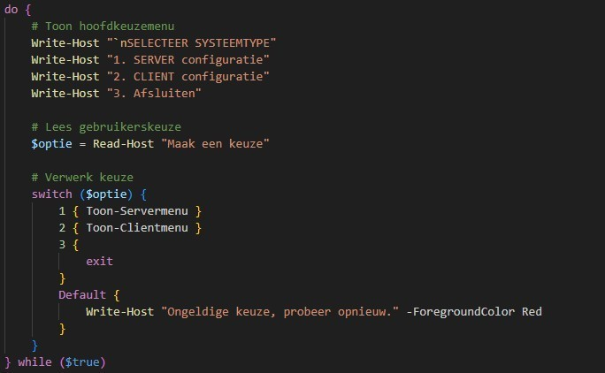

Doel
Het doel was om serverconfiguratie zoveel mogelijk te automatiseren met PowerShell scripts.
Project 4
In dit project werkte ik aan een PowerShell script om een Windows Server omgeving automatisch te configureren.

Het doel was om serverconfiguratie zoveel mogelijk te automatiseren met PowerShell scripts.
Ik werkte met Windows Server, Active Directory, XML-bestanden, gebruikers, groepen en gedeelde mappen.
Het resultaat was een scriptstructuur waarmee verschillende onderdelen automatisch ingesteld konden worden.
Voor dit scripting project moest ik een automatische configuratie uitwerken voor een Windows Server omgeving. Daarbij moest het script onder andere instellingen uitlezen uit bestanden zoals computer.settings.xml, domain.settings.xml, map.txt en user.txt.
Het project bestond uit meerdere fases. Eerst werd de basisstructuur opgezet, daarna volgden de domeinconfiguratie, de aanmaak van OU’s, groepen en gebruikers, en tot slot de gedeelde mappen met correcte rechten.
Het script moest zoveel mogelijk automatisch uitvoeren zodat de server sneller en consistenter ingesteld kon worden.
Een belangrijk onderdeel was het automatisch aanmaken van OU’s, groepen en domeingebruikers.
Ik moest netwerkshares en NTFS-rechten correct instellen zodat gebruikers enkel toegang hadden tot de juiste mappen.
Het script moest foutopsporing ondersteunen en na een herstart opnieuw verder kunnen werken.
Ik werkte aan een PowerShell project waarin verschillende serverinstellingen automatisch uitgevoerd moesten worden. Ik maakte functies, las configuratiebestanden uit en testte stap voor stap of de onderdelen correct werkten.
Daarnaast hield ik rekening met fouten, herstarten, logging en duidelijke documentatie.
Ik heb geleerd hoe krachtig PowerShell is voor systeembeheer. Door scripts te gebruiken kan je veel herhalend werk automatiseren en fouten verminderen.
Ook leerde ik beter werken met functies, bestanden uitlezen, Active Directory beheren en problemen opsporen tijdens het testen.
PowerShell scripting
Serverbeheer
Testen en documenteren
Scripts voor serverinstellingen, domeinconfiguratie, gebruikers, groepen en shares.
Bestanden zoals XML en TXT die gebruikt worden als input voor het script.
Een planning waarin per week beschreven staat welke onderdelen uitgewerkt worden.
Een ReadMe en uitleg waarin staat hoe het script gebruikt en getest kan worden.
Dit project heeft mij geholpen om beter te begrijpen hoe automatisatie gebruikt wordt binnen systeembeheer. Ik leerde niet alleen PowerShell schrijven, maar ook nadenken over structuur, foutopsporing, herbruikbaarheid en duidelijke documentatie.
Terug naar portfolio